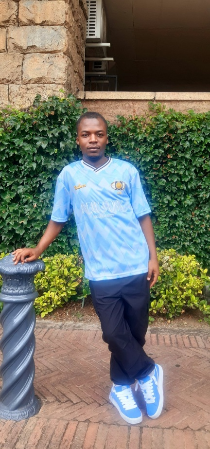
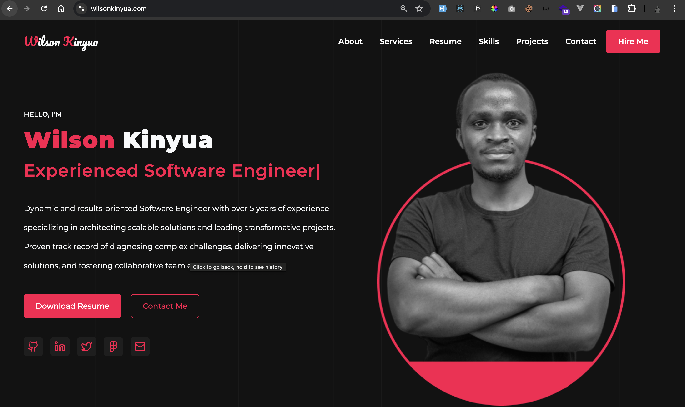

EMMANUEL LALEYE
ABOUT
HI, I AM EMMANUEL LALEYE A SOFTWARE ENGINEER

FRONT - END ENGINEER
- I am a front-end engineer - a builder of experiences, a problem-solver, and a creator of seamless digital interactions. I turn complex ideas into intuitive, beautiful, and accessible interfaces that connect people to technology effortlessly. Every line of code I write is a step toward innovation, ensuring that design meets functionality with precision and elegance. I don't just develop websites; I craft experiences that inspire, engage, and leave a lasting impact.

- GOALS:
- To craft immersive and intuitive user interfaces that enhance user engagement.
- To stay ahead of emerging web technologies, continuously learning and improving.
- To create accessible and inclusive digital experiences for all users.
- To optimize performance and efficiency, making the web faster and more enjoyable.
- Achievements:
- Led front-end architecture decisions, improving scalability and maintainability.
- Implemented design systems that streamlined development workflows and enhanced brand consistency.
- Contributed to open-source projects and mentored aspiring developers, fostering growth in the tech community.
